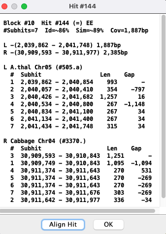

|
|
SyMAP 2D Align |

|
|
|
|||
Details of 2D Alignment
SyMAP clusters hits as follows: The raw anchor set consists of the hits found by MUMmer. When possible, multiple hits are clustered into a single hit. Clustering is by gene if the hits overlap annotation, otherwise, it uses a max separation 1kb, creating "putative gene" regions. The hits in a cluster are called sub-hits; all sub-hits of a cluster are on the same strand.
Alignment: SyMAP uses Promer by default for analysis of two different genomes. Promer translates sequences, uses a fast suffix tree alignment algorithm, then converts the coordinates back to nucleotide. SyMAP alignments use a semi-global dynamic programming (DP) algorithm on the nucleotide sequences using the MUMmer coordinates, which can produce a slightly different alignment. The following oddities can happen:
- Overlap: The hits can overlap.
- Trim: There can be non-matching sequence at the beginning or end of the DP alignment. SyMAP trims this sequence before display.
- Strand: Two genes can be connected by a hit, where the genes are on strands +/- but the hits are on strands -/+, and vice versa. However, if the the gene strands are the same, the hit strands will be the same (=); likewise if the gene strands are different, the hit strands will be different (!=).
Overlap hits
The Hit Information image on the lower left titled "Hit #28" shows the coordinates of the sub-hits. Some rules:- The sub-hit column '#' in Track #1 corresponds to the column '#' in Track #2 (e.g. the rows #2 align to each other).
- The sub-hit order is always relative to the alphabetically greater project name (e.g. Cabbage>A.thal).
- The coordinates are relative to the input genome sequences.
- Both lists are sorted by start coordinate, where the start is always listed before the end.
- Though two sub-hits may overlap (negative gap), they will not align to the same region on the opposite chromosome.
|
The
|
Track #2 Selected Cabbage

Track #1 Selected A.thal 
|

Extreme example:
|  |
The The first image below shows a partial view of the Track #1 non-overlapping dis-ordered sub-hits. The second image shows Track #2 overlapping sub-hits, where they are piled on top of each other. It is better to use the text align to view Track #2.
Track #1 partial A.thal view
|


Trimmed alignments
SyMAP extracts the sequence between the coordinates provided by MUMmer and aligns the sequence. When the sequences do not align fully, the alignment is trimmed. For example, Hit #6 has 7 sub-hits, of which 3 have some trimming:| Lengths | Trimmed (gaps) | |||
| Sub-hit | Input | Aligned | Start | End |
| #218.4 | 357, 351 | 368 | 0 (0,0) | 5 (5,0) |
| #218.5 | 366, 369 | 374 | 0 (0,0) | 1 (0,0) |
| #218.6 | 165, 165 | 165 | 1 (0,0) | 7 (0,7) |
The MUMmer hit for sub-hit #6 is:
[S1] [E1] [S2] [E2] [LEN 1][LEN 2][% IDY] [% SIM] [% STP] [FRM] [TAGS] 16505269 16505427 8884782 8884618 159 165 80.00 87.27 0.00 1 -1 Chr01 Chr04

{kind=link}
{kind=link}
{kind=link}
If you want to view the amount trimmed, you can run
Gene strand vs hit strands
| The image on the right shows a gene on the positive strand of A.thal and a gene on the negative strand of Cabbage. However, the hit joining the genes is negative to the A.thal gene and positive to the Cabbage gene. |

|
| To see the alignment on the reverse strands, use the
Select |

|